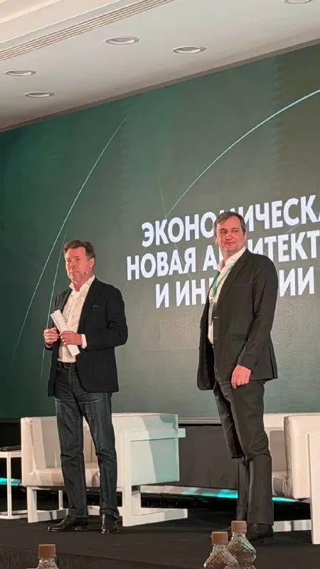

Деловой туризм в эпоху экономических перемен 🌍 На днях выступил на тематическом форуме Continent Express — агентства делового туризма. Вместе с генеральным директором компании провели сессию «Экономическая трансформация: новая архитектура мировых рынков и индустрии делового туризма». Обсудили, как изменения в мировой экономике влияют на деловую…

Альбом · 2